AED deprime; estimulante dispara; álcool na abstinência
O antiepiléptico acalma o neurônio. A cocaína empurra o excesso. O álcool gera crise na abstinência — não no auge da embriaguez como padrão.
1. Princípio dos antiepilépticos
Medicamentos antiepilépticos diminuem o funcionamento dos neurônios — são depressores do sistema nervoso central. O paciente epiléptico não fica “confortável” tomando o remédio todo dia: o preço da redução do funcionamento neuronal é real. Efeitos típicos da lógica depressora: tontura, sonolência, diminuição cognitiva.
2. Adesão e titulação
Principal motivo de o paciente epiléptico fazer crise de novo: não tomar o remédio (adesão) — estava controlado, parou. Drogas neuropsiquiátricas (incluindo antiepilépticos) se iniciam devagar e se retiram devagar — mexem com o funcionamento cerebral. Em dose “no teto” sem titulação: o paciente pode ficar sem crise e sem despertar adequado (sedação excessiva).
3. Emergência: benzodiazepínico
Na emergência, com crise em curso, o princípio é o mesmo: inibir o funcionamento neuronal com um grande sedativo. O grande sedativo da emergência para crise epiléptica é o benzodiazepínico — “acalma” o neurônio.
4. Estimulantes e álcool
Em intoxicação, as que podem ter crise como efeito colateral são as psicoestimulantes (atividade neuronal anormal excessiva): cocaína e anfetamina.
Álcool como depressor: intoxicação, de forma geral, não tem como padrão a crise. A abstinência de álcool, sim, gera crise — não a intoxicação em si.
Pegadinha: intoxicação + crise nas alternativas → pensar droga estimuladora; álcool em abstinência é outro frame.
Fixar a lógica: excitação excessiva ↔ depressão farmacológica é a base para interpretar caso, emergência e intoxicação.
| Classe | Exemplos | Relação com crise |
|---|---|---|
| Depressores (AED / benzo) | antiepilépticos, benzodiazepínico | Tratam / interrompem — inibem o neurônio |
| Estimulantes | cocaína, anfetamina | Podem causar crise |
| Álcool | intoxicação vs abstinência | Intoxicação ≠ padrão de crise; abstinência gera |


Quiz · P6 2 perguntas · resposta com feedback
Q1. Principal motivo conceitual de recorrência de crise em epiléptico previamente controlado:
Q2. Intoxicação com crise nas alternativas: o frame mais alinhado é: